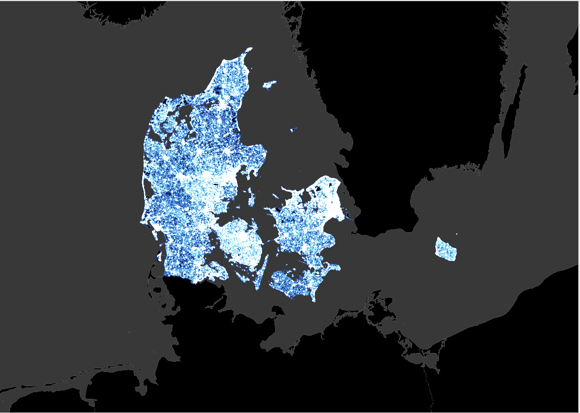

Nicholas Grokhowsky
Styling Maps with QGIS - Part 1
Neon

After loading the Neon.qgz data, the methodology to display these airport routes included:
- Change colors for airports and flight paths to bright pink
- Change stroke widths for airports and flight paths
- Adjust size of airports and apply a drop shadow
- Apply a color ramp from pink to black on the flight paths
- Create an outter glow on the flight paths
- Add a lighter pink line in the center of the flight paths
Bathymetry

After loading the Bathymetry.qgz data, the methodology to display the bathymetry of the Atlantic basin included:
- Select the 'Draw effects' checkbox for each bathymetry layer
- Blend the layers using the 'multiply' function
Styling Maps with QGIS - Part 2
Jemez
After loading the jemez.qgz data, the methodology to drape colored polygons over DEM hillshade rendering included:
- Change raster display for DEM from 'Singlband gray' to 'Hillshade'
- Blend the polygon layer with the DEM using 'multiply'
- Adjust size of airports and apply a drop shadow
- Set 'simple fill' of township boundary lines and increase stroke width
- Blend the township layer using 'overlay' function
- Explore alternative views for printing including adding labels and creating a logo that blends with the background
Denmark

After loading the DK_rpads.qgz data, the methodology to blend the roadways included:
- Blend the roadway feature using 'addition'
- Zoom in and out to show how blending the feature with addition changes the color based on density of roadways
Old Fashioned USA

After loading the USA.qgz data, the methodology to display these airport routes included:
- Run the topological coloration tool with USA states as input layer
- Color the map using the color ID created by the topological coloration
- Make sure coloration is chosen by classification and use 'shuffle random colors' to select a grouping that works
- Duplicate the USA state layer and change all colors to 'shapeburst fill' from 'simple fill'
- Duplicate the shapeburst USA state layer and change to single symbol rendering
- Change 'shapeburst fill' to 'outline: marker line'
- Change the marker line interval to 0.2 mm and change the offset using random number formula 'concat('0,',3*randf(0,1)^3', and change the size to 0.2 mm
- Change the fill and strok to dark gray and turn on all of the USA state layers
- Blend the original state layer using 'multiply' and set opacity to 25%
- Blend the 'shapeburst fill' layer using 'multiply' and set opacity to 80%
Bigfoot on Old Fashioned Ecosystem Map
Bigfeet that were spotted in Grizzy Bear protected habitat (They are most likel Grizzly Bears)
Bigfeet that were spotted throughout the US between 1999 and 2006

Bigfeet that were spotted throughout the US between 2006 and 2011
Bigfeet that were spotted throughout the US between 2011 and 2016

Bigfeet that were spotted throughout the US since 2016
After downloading USA ecoregions, Grizzly Bear territory and Bigfoot sightings, and adding them as layers into QGIS, the methodology includeds:
- Create an old fashioned map the same way as the old fashioned USA Map, but using USA ecoregions
- Set the ecoregion labels using a text buffer
- Display points of all Bigfoot sightings and change icon to a Bigfoot icon using SVG icon
- Adjust opacity of Bigfoot icon and then filter Bigfoot sightings by year
- Clip Bigfoot sightings by Grizzly Bear habitats and display Bigfoot sightings in Grizzly Bear territories